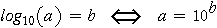
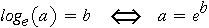

Properties of logarithms
The most important properties of logarithmic functions are:
Multiplying any number x a constant adds the same value to its logarithm, whatever the value of x. This changes multiplicative operations on the original values into additive operations on the logarithms. For example,
Logarithms to the Base 10
There are various logarithmic functions, but the most common are logarithms to the base 10 and logarithms to the base e. Logarithms to the base 10 are easiest to understand, so we will start with them. The core property is:

The logarithm of a number is therefore the power to which 10 must be raised to generate that number. Important examples are:
Logarithms to the Base e
Logarithms to the base e (also called natural logarithms) are similarly defined, but use a constant e = 2.71828 instead of 10. Their defining property is therefore:

For example,
Relationship Between Logarithms to the Bases 10 and e
Logarithms to the base e are more important than those to the base 10 in mathematics. The reason for their importance cannot be explained here, but they are simply related to logarithms to the base 10.
Logarithms to the base e are therefore 2.3026 times those to the base 10. In data analysis, using logarithms to a different base therefore simply rescales the data -- graphical displays are unaffected if the labels on the axis are changed.
In particular, changing the base of the logarithms does not affect linearity or the other assumptions underlying linear models.